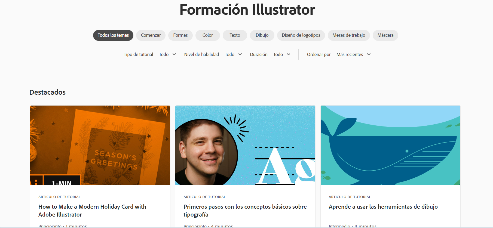

Adobe Illustrator es una poderosa aplicación de diseño gráfico vectorial que se utiliza para crear ilustraciones,
gráficos y diseños de alta calidad. Su enfoque en vectores permite la creación de imágenes escalables que mantienen su
calidad en cualquier tamaño. Illustrator ofrece herramientas de dibujo, edición de formas, texto, tipografía, y una
variedad de efectos para diseñadores gráficos y artistas. Se utiliza en la creación de logotipos, ilustraciones,
infografías y otros proyectos visuales profesionales.
Algunas de sus principales funciones son:
Dibujo vectorial: Illustrator se basa en vectores, lo que permite crear gráficos escalables y de alta calidad que mantienen su nitidez y resolución en cualquier tamaño.
Herramientas de dibujo y formas básicas: Proporciona herramientas de dibujo, como lápices, pinceles y formas básicas, para crear elementos gráficos desde cero.
Capas y organización: Permite trabajar en capas separadas para organizar y gestionar elementos individuales en un diseño.
Texto y tipografía: Ofrece herramientas avanzadas de texto para crear y editar texto de manera precisa, con opciones de formato y efectos tipográficos.
Herramientas de transformación: Incluye funciones para rotar, escalar, reflejar y distorsionar objetos y texto.
Herramientas de dibujo de formas personalizadas: Permite crear y editar formas personalizadas mediante la combinación de trazados y formas básicas.
Pinceles y efectos artísticos: Ofrece una variedad de pinceles y efectos para aplicar a trazados y objetos, lo que permite crear ilustraciones con estilo artístico.
Paleta de colores y muestras: Facilita la selección y gestión de colores, así como la creación y aplicación de paletas de colores personalizadas.
Herramientas de edición y transformación precisa: Permite alinear, distribuir, recortar y ajustar objetos de manera precisa.
Símbolos y patrones: Posibilita la creación y reutilización de símbolos y patrones para simplificar el diseño y mantener la consistencia.
Gráficos en perspectiva: Proporciona herramientas para crear gráficos en perspectiva y aplicar efectos tridimensionales a los objetos.
Exportación y formatos de archivo: Permite exportar diseños en una variedad de formatos, como PDF, SVG y EPS, además de la capacidad de exportar para la web.
Integración con otras aplicaciones de Adobe: Illustrator se integra con otras aplicaciones de Adobe Creative Cloud, lo que facilita la colaboración y el flujo de trabajo con Photoshop y otros programas.
Adobe en su página web cuenta con su propia sección de aprendizaje, donde se pueden encontrar tutoriales para distintos niveles de conocimientos en la plataforma.
